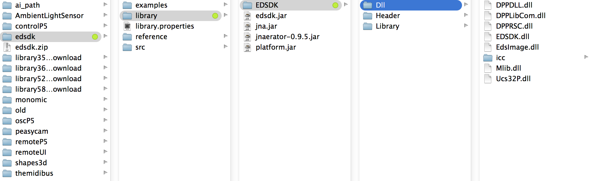

##library.name##
##library.name####library.name##
A library by ##author.name## for the Processing programming environment.
Last update, ##date##.
##library.sentence##
##library.paragraph##
Basic features include:
- Taking and downloading pictures
- Manually adjusting focus
- Setting apperature, exposure, ISO
- Accessing live view
Prerequisites (!)
Before you can use this library you need to obtain the EDSDK native library from Canon. You can do so via their developers program:
Registering is free, but it's manually moderated so expect to wait 1-5 working days until you get access.
Resources
Keywords. ##library.keywords##
Reference. Have a look at the javadoc reference here. A copy of the reference is included in the .zip as well.
Source. The source code of ##library.name## is available at ##source.host##, and its repository can be browsed here.
Tested
Platform ##tested.platform##
Processing ##tested.processingVersion##
Dependencies ##library.dependencies##
Download
Download ##library.name## version ##library.prettyVersion## (##library.version##) in .zip format.
Installation
Unzip and put the extracted ##project.name## folder into the libraries folder of your Processing sketches. Reference and examples are included in the ##project.name## folder.
Once you got SDK access drop the EDSDK folder into Documents/Processing/libraries/edsdk-p5/library/. It should look like this:

{kind=link}
Examples
Find a list of examples in the current distribution of ##library.name##, or have a look at them by following the links below.
You might also find the snippets library handy.
-
##examples##